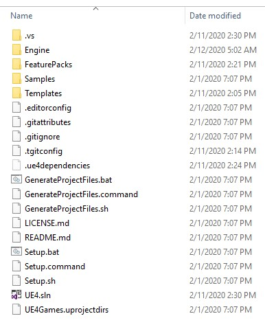
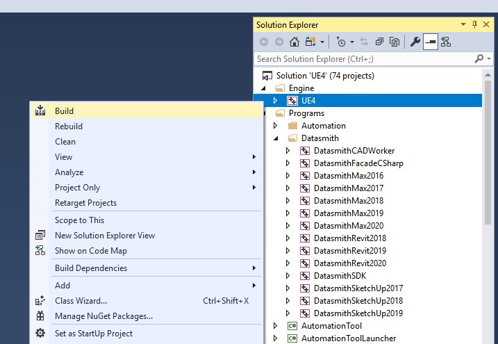

从源代码构建
注意
Setup.bat（询问是否覆盖时选择N）→ GenerateProjectFiles.bat → 在“Development Editor”中构建 “UE4”
本页介绍了在 Windows 上从源代码构建引擎。首先安装工具链——几乎所有针对Vite报告的构建失败都被证明是工具链问题，而不是代码问题。
如果您以前从未从源代码构建过虚幻引擎，请参阅 Epic 的 Visual Studio 4.27 设置指南 仍然是最好的背景读物。
Guided build with ViteSetup
The repository root ships ViteSetup.bat, an assistant that runs the whole flow in order: environment
check, toolchain enforcement, dependency setup with platform selection, project file generation, source or
binary build, engine registration, desktop shortcut, and optional debloat.
ViteSetup.bat
For the advanced menu, which lets you run any single step on its own:
ViteSetup.bat menu
The assistant is the recommended path for a first build because it catches missing prerequisites before you spend twenty minutes compiling. See ViteSetup Assistant for a full walkthrough of its screens and options.
The assistant enforces its toolchain requirements with no bypass. If it refuses to continue, it will print exactly which component is missing.
{style="note"}
Manual build
If you would rather drive the steps yourself, this is what the assistant is doing.
1. Download dependencies
Setup.bat
GitDeps is already patched in this fork, so no manual edits are needed. When the script asks whether to
overwrite local changes, answer N.
Setup.bat accepts -exclude= arguments to skip platforms and content you do not need, which
substantially reduces download size and disk usage. A Win64-only setup looks roughly like this:
Setup.bat -exclude=Android -exclude=IOS -exclude=TVOS -exclude=Mac -exclude=MacOSX ^
-exclude=Linux -exclude=Linux64 -exclude=HTML5 -exclude=WinRT ^
-exclude=PS4 -exclude=XboxOne -exclude=Switch -exclude=Dingo ^
-exclude=Samples -exclude=Templates -exclude=FeaturePacks -exclude=Engine/Documentation
Do not exclude the Win32 folders. Win64 installed builds depend on third-party tools that live under Win32, including
ARM\Win32\astcenc.exe.{style="warning"}
ViteSetup.bat exposes these as named presets — Recommended Win64, Win64 ultra compact,
Win64 + templates / feature packs, Win64 + Android, Win64 + Linux and Full setup — and
will print the exact Setup.bat command line for each one from its Show setup profiles menu entry.
2. Generate project files
GenerateProjectFiles.bat
This produces UE4.sln in the repository root.

项目文件生成后，资源管理器中的仓库根目录显示为 UE4.sln
UE4.sln 文件会在生成成功后出现在安装脚本旁边。如果该文件缺失，则表示生成失败——请阅读其输出，而不是打开 Visual Studio。
3. Build
Open UE4.sln and set UE4 as the startup project if it is not already. Build the
Development Editor configuration for Win64.

在 Visual Studio 解决方案资源管理器中，选中 UE4 项目并打开“生成”命令。
请在Engine下构建 UE4，而不是在解决方案下构建。构建整个解决方案会编译编辑器构建不需要的程序目标。
From the command line, the equivalent is:
Engine\Build\BatchFiles\Build.bat UE4Editor Win64 Development -WaitMutex
Engine\Build\BatchFiles\Build.bat ShaderCompileWorker Win64 Development -WaitMutex
Engine\Build\BatchFiles\Build.bat UnrealLightmass Win64 Development -WaitMutex
All three targets are needed for a working editor. ViteSetup.bat builds them in this order.
4. Register the engine
So that .uproject files can find this build, register it under the current user's Unreal Engine build key:
reg add "HKCU\Software\Epic Games\Unreal Engine\Builds" /v UE_ViteFork /t REG_SZ /d "<engine root>" /f
Then set "EngineAssociation": "UE_ViteFork" in your project's .uproject file. The assistant does this
step for you and also cleans up stale GUID-keyed entries that point at the same folder.
Build times
Compile time is dominated by core count. As a reference point, a full build of the repository on a Ryzen 9 9950X3D takes about 15 minutes; removing the bundled Vite plugins brings that down to about 12 minutes, with the Houdini plugin accounting for most of the difference. See Debloat Guide if iteration speed matters more to you than plugin coverage.
Producing an installed build
Once a source build works, you can turn it into a redistributable installed build for the rest of the
team. RunUAT.bat in the repository root runs the BuildGraph Make Installed Build Win64 target and
writes the result to LocalBuilds\Engine\Windows\:
RunUAT.bat
See Installed Builds for the full set of options and Packaging and Distribution for the compression scripts.